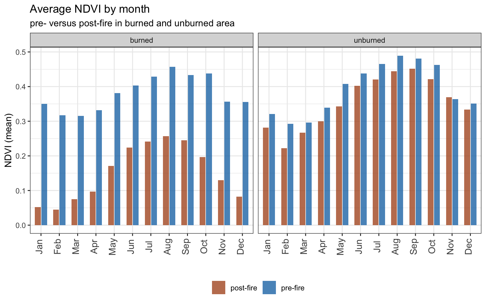

Chapter 3 Wildfire Recovery
This analysis investigates the recovery of vegetation after the 2002 Hayman Fire in Douglas, Jefferson, Park, and Teller counties, Colorado. Vegetation recovery is measured based on Normalized Difference Vegetation Index (NDVI) which is calculated from the visible and near-infrared light reflected by vegetation detected by remotely sensed data. The influences of snow and vegetation moisture content on recovery are examined. The Normalized Difference Snow Index (NDSI) is used as a measure of snow cover and the Normalized Difference Moisture Index (NDMI) is used as a measure of vegetation water content.
3.1 Read Data
####-----Reading in Data and Stacking it ----- ####
#Reading in files
files <- list.files('data',full.names=T)
files <- files[grep("hayman", files, ignore.case=FALSE)]
#Read in individual data files
ndmi <- read_csv("data/hayman_ndmi.csv") %>% ## read_csv(files[1]) %>%
rename(burned=2,unburned=3) %>%
mutate(data='ndmi')
ndsi <- read_csv("data/hayman_ndsi.csv") %>% ## read_csv(files[2]) %>%
rename(burned=2,unburned=3) %>%
mutate(data='ndsi')
ndvi <- read_csv("data/hayman_ndvi.csv") %>% ## read_csv(files[3]) %>%
rename(burned=2,unburned=3) %>%
mutate(data='ndvi')
## Stack as a tidy dataset
full_long <- rbind(ndvi,ndmi,ndsi) %>%
gather(key='site',value='value',-DateTime,-data) %>%
filter(!is.na(value))3.2 Assignment
3.2.1 Question 1)
What is the correlation between NDVI and NDMI? - here I want you to convert the full_long dataset in to a wide dataset using the function “spread” and then make a plot that shows the correlation as a function of if the site was burned or not (x axis should be ndmi) You should exclude winter months and focus on summer months
3.2.1.1 Daily NDVI vs NDMI
#use spread to pivot data from long to wide
full_wide <- full_long %>%
spread(key=data, value=value) %>%
mutate(month = month(DateTime), year = year(DateTime))
#plot NDVI vs NDMI daily
full_wide %>%
filter(month %in% (6:10)) %>%
ggplot(., aes(x = ndmi, y = ndvi, color=site)) +
geom_point(alpha=0.5) +
labs(
title = "Daily relationship between NDVI and NDMI (summer only)"
, subtitle = "burned versus unburned area"
) +
xlab("NDMI") +
ylab("NDVI") +
scale_color_brewer(palette = "Dark2") +
theme_bw() +
theme(
legend.position="bottom"
, legend.box = "horizontal"
, legend.title = element_blank()
)Based on the chart above, there is a positive correlation between the daily Normalized Difference Moisture Index (NDMI) and vegetation health as measured by NDVI in the summer months (June-October). There is a regime shift in the NDVI values of the burned area between pre-fire (higher NDVI values) and post-fire (lower NDVI values) measurements.
3.2.1.2 Monthly NDVI vs NDMI
#aggregate data to monthly level and plot
full_wide %>%
filter(month %in% (6:10)) %>%
group_by(site, year, month) %>%
summarise_if(is.numeric, mean, na.rm = TRUE) %>%
ggplot(., aes(x = ndmi, y = ndvi, color=site)) +
geom_point(alpha=0.5) +
geom_smooth(method = 'lm') +
labs(
title = "Monthly relationship between NDVI and NDMI (summer only)"
, subtitle = "burned versus unburned area"
) +
xlab("NDMI") +
ylab("NDVI") +
scale_color_brewer(palette = "Dark2") +
theme_bw() +
theme(
legend.position="bottom"
, legend.box = "horizontal"
, legend.title = element_blank()
)Based on the average NDVI and NDMI values at the monthly level presented above for summer months only (June-October), there is a more clear distinction between burned and unburned areas. The burned area vegetation health (NDVI) responds more positively to changes in moisture (NDMI) compared to the unburned area.
3.2.2 Question 2)
- What is the correlation between average NDSI (normalized snow index) for January - April and average NDVI for June-August? In other words, does the previous year’s snow cover influence vegetation growth for the following summer?
## aggregate data to yearly mean by season
seas_yr_mean <- full_long %>%
mutate(month = month(DateTime), year = year(DateTime)) %>%
filter(month %in% (1:4) | month %in% (6:8)) %>%
mutate(season =
case_when(
month %in% (1:4) ~ "winter"
, month %in% (6:8) ~ "summer"
, TRUE ~ "other")
) %>%
group_by(site, data, year, season) %>%
summarize(mean_value = mean(value, na.rm = TRUE)) %>%
pivot_wider(names_from = c(data, season), names_sep = "_", values_from = mean_value)
## plot relationship between winter snow cover (ndsi) and summer vegetation growth (ndvi)
ggplot(seas_yr_mean, aes(x = ndsi_winter, y = ndvi_summer, color = site)) +
geom_point(alpha=0.8) +
labs(
title = "Relationship between winter snow cover (ndsi) and summer vegetation growth (ndvi)"
, subtitle = "burned versus unburned area"
) +
xlab("NDSI winter (Jan-Apr)") +
ylab("NDVI summer (Jun-Aug)") +
scale_color_brewer(palette = "Dark2") +
theme_bw() +
theme(
legend.position="bottom"
, legend.box = "horizontal"
, legend.title = element_blank()
)Based on the data presented above, there is not a clear relationship between snow as measured by NDSI in the winter (Jan-Apr) and vegetation health as measured by NDVI in the summer (Jun-Aug). This could be due to the vegetation species present in this area which is predominately slow-growing, conifer forest.
3.2.3 Question 3)
How is the snow effect from question 2 different between pre- and post-burn and burned and unburned?
## create pre- and post-fire group var
seas_yr_mean <- seas_yr_mean %>%
mutate(pre_post_fire =
case_when(
year < 2002 ~ "pre-fire"
, year > 2002 ~ "post-fire"
, TRUE ~ "other")
)
## plot relationship between winter snow cover (ndsi) and summer vegetation growth (ndvi)
seas_yr_mean %>% filter(pre_post_fire != "other") %>%
ggplot(., aes(x = ndsi_winter, y = ndvi_summer, color = pre_post_fire)) +
geom_point(alpha=0.8) +
facet_grid(. ~ site) +
labs(
title = "Relationship between winter snow cover (ndsi) and summer vegetation growth (ndvi)"
, subtitle = "pre- versus post-fire in burned and unburned area"
) +
xlab("NDSI winter (Jan-Apr)") +
ylab("NDVI summer (Jun-Aug)") +
scale_color_manual(values = rev(brewer.pal(n=12, name="Paired")[c(2,12)])) +
theme_bw() +
theme(
legend.position="bottom"
, legend.box = "horizontal"
, legend.title = element_blank()
)
Based on the data above, there does not appear to be a strong relationship between snow in the winter and vegetation health in the summer. The lack of relationship holds even when separating the influences of pre- and post-fire and burned and unburned area. Again, there is a regime shift in the NDVI values of the burned area in the post-fire measurements which are significantly lower than pre-fire conditions.
3.2.4 Question 4)
What month is the greenest month on average?
3.2.4.1 Quick monthly NDVI chart
## quick bar chart for average ndvi
ggplot(full_long %>% filter(data=="ndvi"), aes(as.factor( month(DateTime) ), value, )) +
geom_bar(stat = "summary", fun = "mean", na.rm = TRUE, fill = "#7FCDBB", width = 0.7) +
scale_x_discrete(labels=month.abb) +
labs(
title = "Overall average NDVI by month"
) +
xlab("") +
ylab("NDVI (mean)") +
theme_bw()Overall, August is typically the greenest month based on average NDVI. It is possible that this impact changes when looking at the impacts of the fire in burned and unburned areas (see below).
3.2.4.2 Detailed monthly NDVI chart
## summarize data by month, site, pre- post-fire
means_month <- full_long %>%
mutate(month = month(DateTime), year = year(DateTime)) %>%
mutate(pre_post_fire =
case_when(
year < 2002 ~ "pre-fire"
, year > 2002 ~ "post-fire"
, TRUE ~ "other")
) %>%
group_by(site, data, month, pre_post_fire) %>%
summarize(mean_value = mean(value, na.rm = TRUE)) %>%
pivot_wider(names_from = c(data), values_from = mean_value)
## plot average NDVI over month by burned vs unburned
means_month %>% filter(pre_post_fire != "other") %>%
ggplot(., aes(x = as.factor(month), y = ndvi, fill = pre_post_fire)) +
geom_col(alpha=0.8, position = "dodge2", width = 0.7) +
facet_grid(. ~ site) +
scale_x_discrete(labels=month.abb) +
labs(
title = "Average NDVI by month"
, subtitle = "pre- versus post-fire in burned and unburned area"
) +
ylab("NDVI (mean)") +
xlab("") +
scale_fill_manual(values = rev(brewer.pal(n=12, name="Paired")[c(2,12)])) +
theme_bw() +
theme(
legend.position="bottom"
, legend.box = "horizontal"
, legend.title = element_blank()
, axis.text.x = element_text(size = 11, angle = 90, vjust=0.2)
)
When separating the effects of the fire on NDVI in burned and unburned areas, the monthly trend in vegetation health is similar to the overall results. However, in the unburned area the greenest month shifts from August in pre-fire measurements to September in post-fire measurements.
3.2.5 Question 5)
What month is the snowiest on average?
3.2.5.1 Quick monthly NDSI chart
## quick bar chart for average ndsi
ggplot(full_long %>% filter(data=="ndsi"), aes(as.factor( month(DateTime) ), value)) +
geom_bar(stat = "summary", fun = "mean", na.rm = TRUE, fill = "#1D91C0", width = 0.7) +
scale_x_discrete(labels=month.abb) +
labs(
title = "Overall average NDSI by month"
) +
xlab("") +
ylab("NDSI (mean)") +
scale_y_continuous(breaks=seq(-0.5,0.2,0.1)) +
theme_bw()Overall, January is typically the snowiest month based on average NDSI.
3.2.6 Bonus Question 1)
Redo all problems with spread and gather using modern tidyverse syntax.
The modern tidyverse syntax for reshaping data from long to wide is pivot_wider() and the syntax for reshaping data from wide to long is pivot_longer(). This syntax is utilized above in the section summarizing data by month, site, and a pre- post-fire grouping variable:
# summarize data by month, site, pre- post-fire
# use pivot_wider to transform data from long to wide
means_month <- full_long %>%
mutate(month = month(DateTime), year = year(DateTime)) %>%
mutate(pre_post_fire =
case_when(
year < 2002 ~ "pre-fire"
, year > 2002 ~ "post-fire"
, TRUE ~ "other")
) %>%
group_by(site, data, month, pre_post_fire) %>%
summarize(mean_value = mean(value, na.rm = TRUE)) %>%
pivot_wider(names_from = c(data), values_from = mean_value)